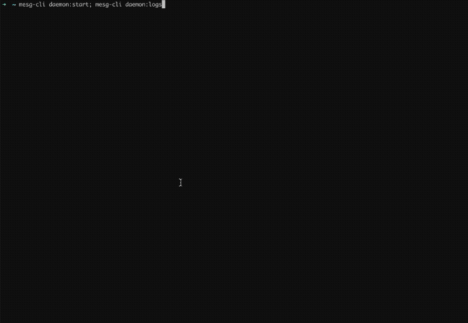

We finally released v0.16 of the Engine! This version uses Cosmos and Tendermint to replicate the services across multiple Engines using a state machine built on a blockchain!
Services on the decentralized network
The decentralized network of Services functionality is now out of beta and is activated by default. Now when you start the Engine, it will create by default a local dev blockchain if no specific configuration is set.
As soon as the Engine starts, you should see in the logs a new block every second 
You can, of course, connect multiple Engines together. Check out the network section for more details.

Engine config file
The Engine is now reading most of the configs from a yaml file instead of environmental variables. This makes advanced configuration easier. This file is located by default in ~/.mesg/config.yml.
Here is an example of a config file:
log:
format: text
level: info
forcecolors: true
tendermint:
config:
p2p:
persistentpeers: 9fbd3f7ac4f143d4ad63d94b0ea34c3b39dcf973@3.3.3.3:26656
The two remaining environmental variables are MESG_NAME and MESG_PATH to respectively set the Engine’s name (default to engine) and the path to the root folder in Docker (default to ~/.mesg).
Deletion of the system services
The two system services, ethwallet and marketplace have been deleted and the functionality replaced by directly using Cosmos’ account and the decentralized network of services for the marketplace. The account commands of the CLI are still available but the marketplace commands have been removed to directly use the service commands.
Now when you create services, they are automatically available on the network. As there is no official public network for now, the services will be available only on your Engine or the Engines that you manually configure to connect to each other (check the next part to learn how to do it).
Tuto: Create a network with multiple Engines
Now that the network functionality is available, you can connect multiple Engines running on different computers together on a network and share services.
Follow this brief guide to learn how to do it.
Changelogs
Follow the links below to see the complete changelogs:
To update the Engine and the CLI, follow the installation process on the documentation.